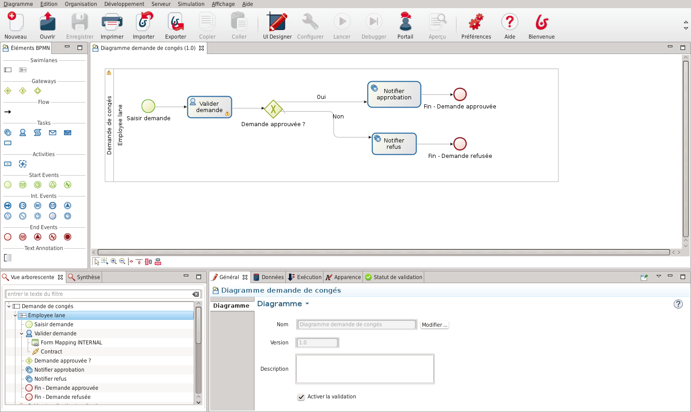
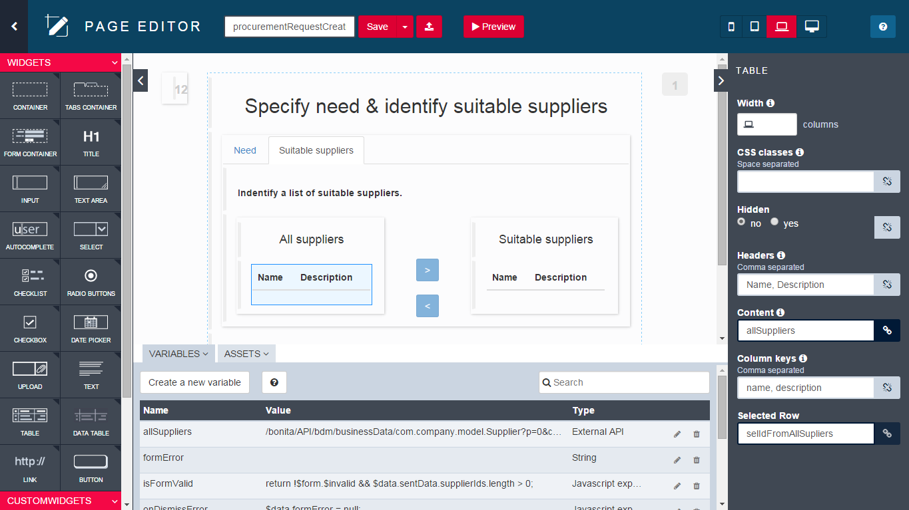
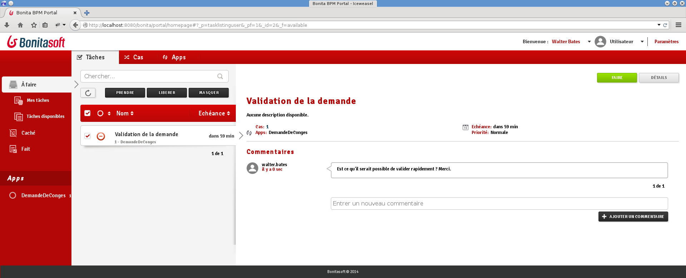
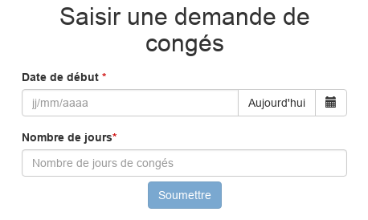
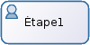
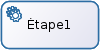

Checklist
- Télécharger les fichier du Bonita Camp : auto
- Installer la dernière version du Studio (cf document exercises)
- Installer la dernière version du JDK Oracle 8
- Démarrer le Studio et cliquer le bouton Portail
- Nous recommandons d'utiliser Chrome où Firefox lors de vos développements
Programme
- Objectifs du BPM
- Composants de Bonita
- Introduction au BPMN
- Données et Contrats
- Formulaires et Pages
- Acteurs
- Connecteurs
- Applications
- Déploiement
Objectifs du BPM
Collaborer à la définition et à l'exécution des processus de l'entreprise
Suivre le bon déroulement des processus
Optimiser les processus
Composants de Bonita
| Bonita Studio | ||
| Bonita Engine | } | Bonita Platform |
| Bonita Portal | ||
Studio : éditeur de diagrammes
Studio : UI Designer
Bonita Engine
Fournit un ensemble de services
Responsable de l'exécution des processus (pas d'interface graphique)
Basé sur Java SE 8
Encapsulé avec le Portal dans une application web Java
Requiert :
- Serveur d'application Java EE
- Base de données transactionnelle compatible avec JDBC
Bonita Portal
Interface web pour l'utilisateur final et l'administrateur
Présente la liste des tâches à réaliser
Permet de déployer et configurer des processus
Bonita Portal : Forms
Affiche les formulaires créés avec le UI Designer
Servis dans le Portal Bonita ou via une application
Bonita Portal : Applications
Permet le déploiement d'application métiers composées de pages personnalisées créées avec le UI Designer

Introduction au BPMN
Notation standard pour la modélisation des processus
Un processus est représenté par un Pool 
Les éléments essentiels :
 | Evénement de début |
|  | Tâche humaine |
|  | Tâche automatique/service |
 | Evénement de fin |
Les éléments sont reliés par des Transitions →
Portes logiques
3 types de portes logiques :
 | Exclusive |
 | Parallèle |
| Inclusive |
Les conditions sont définies sur les transitions sortantes. Pas de conditions pour les portes parallèles
Une bonne pratique consiste à utiliser les portes de manière symétrique si possible :

Exercice 1
Modélisation basique de processus
Téléchargez les instructions et les corrections à partir de ce lien :
Données
BDM (Business Data Model)
Accessible de partout, stocké dans une base métier dédiée
Usage : stocker les données manipulées par les instances de processus et/ou applications
Variables de formulaire
Accessibles depuis un formulaire, jamais persistées
Usage : manipuler et stocker les informations accessibles en lecture et en écriture dans un formulaire
Données
| BDM | Variables de formulaire |
|---|---|
|
|
Documents : fichiers avec gestion des révisions, déclarés au niveau des processus
Contrats
Ensemble de paramètres d'entrée requis avec des règles de validation.
Les données envoyées par les formulaires doivent remplir des contrats pour :
- Instancier un processus
- Exécuter une tâche humaine
Contribue au découplage entre la logique métier et les interfaces graphiques.
Aperçu de l'architecture
Envoi de données depuis un formulaire vers une variable métier

Exercice 2
Ajout de données et spécification de contrats
Formulaires & Pages
Créé dans le UI Designer à base de conteneurs et de widgets
Basé sur AngularJS et Bootstrap.
2 types de formulaires:
- Formulaires éditables qui doivent remplir un contrat
- Instanciation de processus
- Tâches humaines (pas de formulaire sur les tâches de type service)
- Formulaire de synthèse (lecture seule) défini au niveau du Pool
Widgets
Un ensemble de widget de base sont fourni par défaut (champ texte, menu déroulant, sélecteur de date...)
Des widgets personnalisés peuvent être créés avec le UI Designer
Aperçu de l'architecture
Afficher une donnée métier dans un formulaire

Exercice 3
Création de formulaires
Acteurs
Déclaré au niveau du Pool. Associé avec des Lanes ou des tâches humaines. 2 options d'implémentation :
| Avantages | Limitations | |
|---|---|---|
| Acteur | Toujours à jour par rapport à l'organisation | Association qui ne peut pas se baser sur des données métier |
| Filtre d'acteur | Association qui peut inclure des données métier | Calculé à l'instanciation d'une étape |
Exercice 4
Gestion d'acteurs
Connecteurs
Permet à un processus d'interagir avec le SI (sens opposé à celui des API Bonita)
Un catalogue de connecteurs standard est fourni dans le Studio.
Des connecteurs personnalisés peuvent être :
- Implémentés dans le Studio ou un IDE Java
- Importés depuis notre site communautaire
Exercice 5
Notification par le biais d'un connecteur
Applications basées sur le BPM
Combiner différents processus ensemble dans le but de fournir une application métier riche et cohérente.
Respecte le modèle MVC :
- Le modèle est le BDM
- La vue est la combinaison des pages d'applications et des formulaires de processus
- Le contrôleur est un ensemble de processus
Les applications sont déployées et rendues par le Portail Bonita
Exercice 6
Créer une application de gestion des congés.
Déploiement de processus
Étapes principales du déploiement d'un processus :
| 1. Configuration du processus 2. Génération du fichier Bar |
Studio |
| 3. Déploiement du fichier Bar 4. Configuration du processus 5. Activation du processus |
Portal |
Déploiement d'applications
Étapes principales du déploiement d'une application:
| 1. Exporter les pages depuis le UI Designer 2. Exporter l'application |
Studio |
| 3. Importer les pages dans le menu Ressources 4. Importer l'application |
Portail |
Merci pour votre attention
Des questions? N'hésitez pas.
Ressources complémentaires :
- Documentation - documentation.bonitasoft.com
- Site corporate - bonitasoft.com
- Communauté - community.bonitasoft.com
- GitHub - github.com/bonitasoft